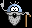
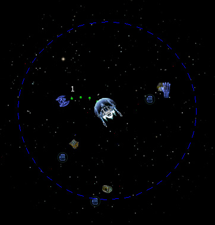

Руководство рейнджера
> Экран космоса >
Подъем предмета
|
Руководство рейнджера
> Экран космоса >
Подъем предмета
|
| Подъем предмета Предметами называется все, что корабли могут перевозить на своем борту. Это оборудование и оружие, товары и артефакты, предметы квестов и сценариев. Любой предмет, находящийся в космосе, можно поднять на борт, имея захват необходимой грузоподъемности. Если курсор мыши превращается в руку при наведении на предмет, значит, эту вещь в принципе можно взять. Внимание! Без захвата подбирать предметы вы не сможете, в этом случае стоит заглянуть в магазин оборудования. Чтобы поднять предмет на борт корабля: Вариант 1 Дважды кликните по предмету. Корабль подлетит и захватом втянет предмет на борт. Совет. Если вы планируете поднять на борт несколько грузов, то кликните один раз по каждому из них (рядом с предметом будет появляться маленькая иконка в виде руки), а затем дважды щелкните мышкой на последнем предмете. Корабль сам полетит собирать указанные грузы. Вариант 2 1. Подлетите к предмету так, чтобы он оказался в зоне действия захвата (показывается кругом при наведении курсора мыши на предмет). 2. Щелкните по предмету. Рядом с ним появится иконка в виде руки. 3. Нажмите кнопку "Конец хода". Предмет будет втянут захватом на борт корабля.  Чтобы "выделить" все предметы в зоне действия захвата нажмите клавишу Num 0. Чтобы "выделить" все предметы в системе нажмите клавишу Num .. Около предметов, которые могут быть подняты, появится иконка в виде руки. |

Примечание. Предмет не будет поднят на борт в одном из двух случаев: • Он находится вне зоны действия захвата. В этом случае подлетите поближе к предмету и повторите попытку. • Грузоподъемности вашего захвата недостаточно для притягивания столь большого предмета. Чтобы исправить положение, надо приобрести более мощный захват. Возможна ситуация, когда несколько кораблей одновременно хотят поднять на борт один и тот же предмет. В этом случае поднимет его тот, кто находится ближе. Любой предмет, находящийся в космосе, можно расстрелять из своих орудий - чтобы он не достался конкурентам. Внимание! Если ваш корабль перегружен, он не сможет летать, пока вы не освободитесь от лишнего груза. Поэтому берите лишь столько, сколько можете увезти. |